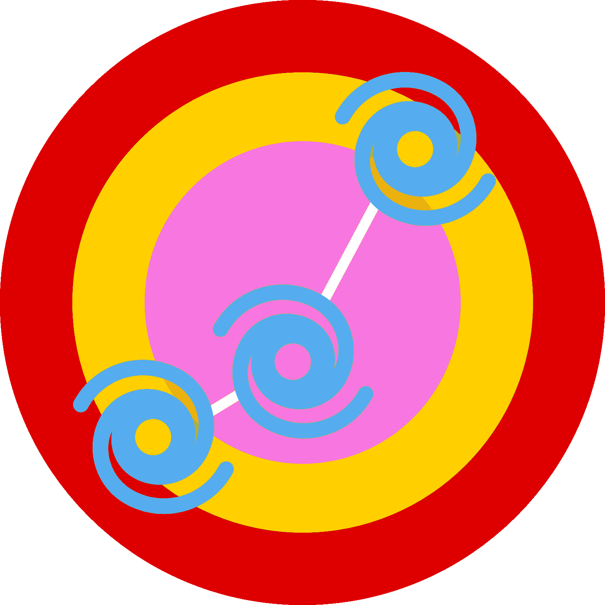

TrackTempest
A fork of
https://github.com/StrawberryMaster/TrackGen
Ver 0.0.0.2
⌨️ Manual Input
📋 BT File
⚙️ Options:
Use accessible 🎨 colours
Use 🤏 smaller ⭕ dot sizes (summary maps only)
Select 🗺️ map ⚙️ type:
✅ Normal
🔶 Large
🐌 Extra large (slow)
🌐 Next Gen
🌍 Black Marble
Upload custom 🗺️ map:
❓ Name
🔼🔽 Latitude
⬅️➡️ Longitude
💨 Wind 🧭 Speed
🌀 Stage
Name:
Latitude:
°N
°S
Longitude:
°E
°W
Wind Speed:
kph
mph
kt
Stage:
Extratropical cyclone
Subtropical cyclone
Tropical cyclone
Remove Point
New Point
Generate Map
Export Data
Standard JSON
Compress JSON
HURDAT Format
Import Data
File format:
HURDAT
ATCF
IBTrACS
RSMC
STORMS
Generate Map
OR
Upload File
This project is a fork of a GitHub repoistory, but with my own tweaks added to it, enjoy;)
TrackGen
TrackGen requires JavaScript to run. Please enable JavaScript and refresh the page.